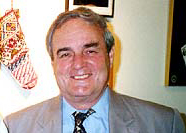
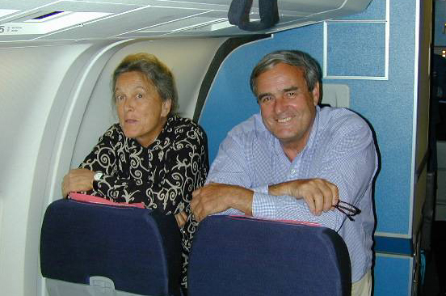

I met Bill Miller in Tehran, when I was looking for international scientists to invite to Iran for the occasion of the 1999 total solar eclipse. He was with Search for Common Ground then and kindly helped us to come in contact with Dr. Alan Hale and the rest of the group.
He is very interested in Iran and has been to Iran many times.


Bill and Suzzane Miller on their
way to Iran, Aug. 1999